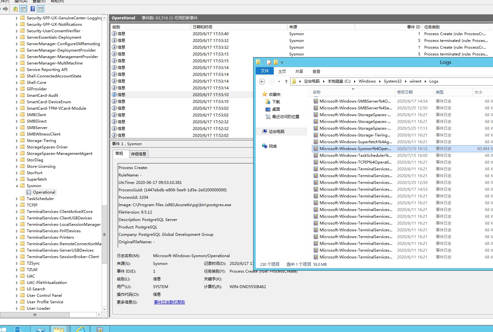

安装
安装并且把Auto_Update.bat，自动更新加入定时任务,把相关的地址替换一下
@echo off
setlocal
set hour=%time:~0,2%
set minute=%time:~3,2%
set /A minute+=2
if %minute% GTR 59 (
set /A minute-=60
set /A hour+=1
)
if %hour%==24 set hour=00
if "%hour:~0,1%"==" " set hour=0%hour:~1,1%
if "%hour:~1,1%"=="" set hour=0%hour%
if "%minute:~1,1%"=="" set minute=0%minute%
set tasktime=%hour%:%minute%
mkdir C:\ProgramData\sysmon
pushd "C:\ProgramData\sysmon\"
echo [+] Downloading Sysmon...
@powershell (new-object System.Net.WebClient).DownloadFile('https://live.sysinternals.com/Sysmon64.exe','C:\ProgramData\sysmon\sysmon64.exe')"
echo [+] Downloading Sysmon config...
@powershell (new-object System.Net.WebClient).DownloadFile('https://raw.githubusercontent.com/ion-storm/sysmon-config/develop/sysmonconfig-export.xml','C:\ProgramData\sysmon\sysmonconfig-export.xml')"
@powershell (new-object System.Net.WebClient).DownloadFile('https://raw.githubusercontent.com/ion-storm/sysmon-config/develop/Auto_Update.bat','C:\ProgramData\sysmon\Auto_Update.bat')"
sysmon64.exe -accepteula -i sysmonconfig-export.xml
sc failure Sysmon64 actions= restart/10000/restart/10000// reset= 120
echo [+] Sysmon Successfully Installed!
echo [+] Creating Auto Update Task set to Hourly..
SchTasks /Create /RU SYSTEM /RL HIGHEST /SC HOURLY /TN Update_Sysmon_Rules /TR C:\ProgramData\sysmon\Auto_Update.bat /F /ST %tasktime%
timeout /t 10
exit
Auto_Update.bat
@echo on
cd C:\ProgramData\sysmon\
@powershell (new-object System.Net.WebClient).DownloadFile('https://raw.githubusercontent.com/ion-storm/sysmon-config/develop/sysmonconfig-export.xml','C:\ProgramData\sysmon\sysmonconfig-export.xml')"
sysmon64 -c sysmonconfig-export.xml
exit

然后安装 Winlogbeat
https://artifacts.elastic.co/downloads/beats/winlogbeat/winlogbeat-7.8.0-windows-x86_64.msi